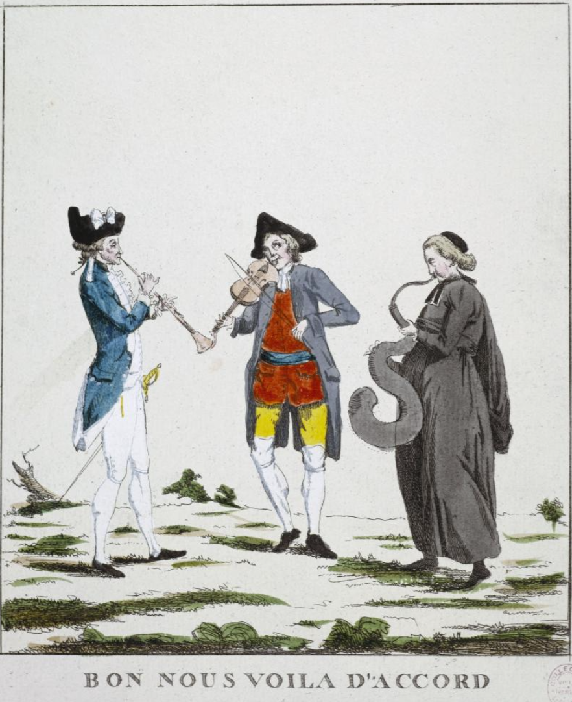
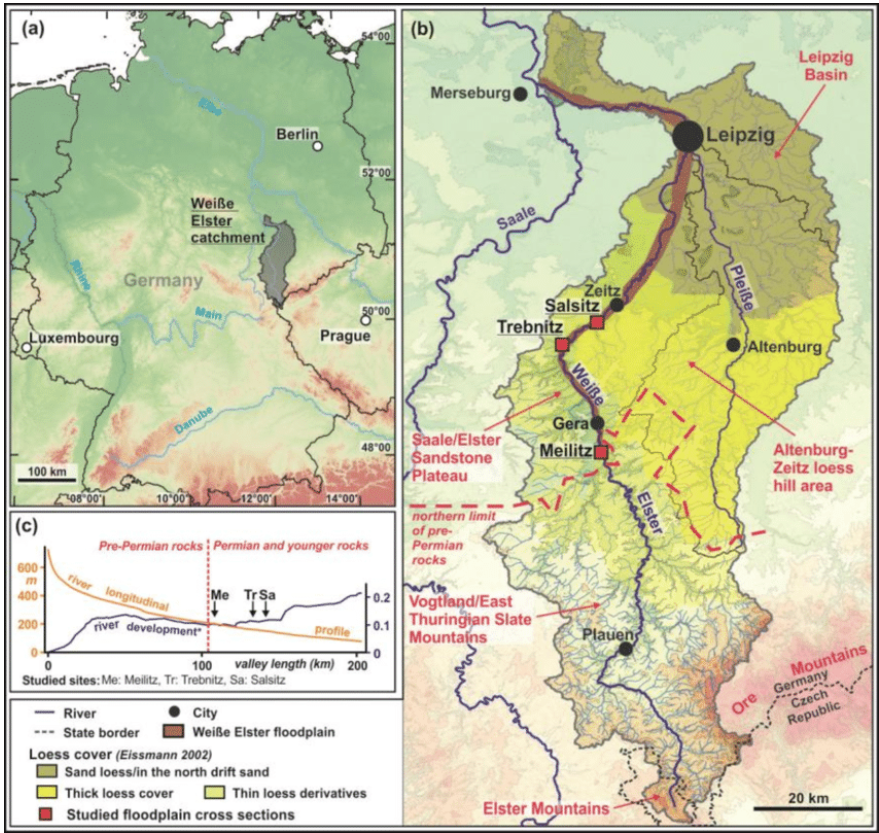
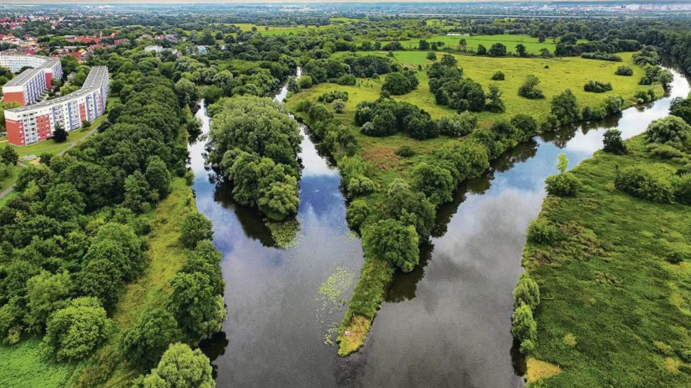
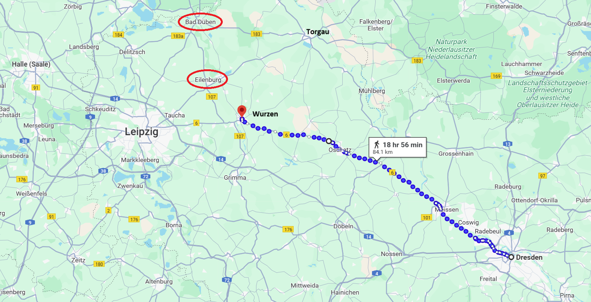

라이프치히로 가는 길 (17) - 상남자들의 포옹
게시: 2025-02-24T06:30:46+09:00
혐오스러운 프랑스인 베르나도트와의 회담에서 그나이제나우 본인은 핑계를 대고 쏙 빠졌지만 누가 뭐래도 프로이센측의 두뇌는 블뤼허가 아니라 그나이제나우였습니다. 따라서 그나이제나우는 이 회담에서 얻어내야 할 것들에 대해 꼼꼼히 적은 협상 가이드를 통역 역할로 동석한 뮈플링에게 주었지만, 블루허를 통해 베르나도트에게 전달될 요구 사항들은 뮈플링이 보기에도사실상 비현실적인 것들이었습니다. 요구 사항의 핵심은 베르나도트가 블뤼허와 어깨를 나란히하고 당장 라이프치히로 달려가자는 것이었는데, 프로이센 사람들이 보기에 겁장이 기회주의자에 불과한 베르나도트가 그런 대담한 계획에 동의할 턱이 없기 때문이었습니다.
(Frères d'armes는 원래 프랑스어에서 전우라는 뜻으로 흔히 쓰이는 표현입니다. 필연적으로, HBO의 걸작 미니시리즈 밴드 오브 브라더즈의 프랑스어판 제목도 Frères d'armes로 번역되었습니다.) 블뤼허처럼 역시 20km 정도를 마차로 달려온 베르나도트는 블뤼허를 만나자마자 그를 'mon cher frère d'armes' (내 소중한 전우, my dear brother in arms)라고 부르며 포옹까지 하면서 매우 친한 척 했습니다. 이건 대단히 프랑스인스러운 매너로서 딱딱한 프로이센 사람으로서는 이런 신체 접촉이 별로 달갑지 않았을 것입니다. 이렇게 시작부터 삐딱선을 타며 시작한 회담은 처음에는 그럭저럭 순조롭게 시작되었습니다. 보헤미아 방면군의 공격을 도와 나폴레옹을 패배시키기 위해서는 슐레지엔 및 북부 방면군이 지체 없이 함께 라이프치히로 진격해야 한다고 블뤼허가 촌스러운 독일어로 열심히 떠들면 뮈플링이 불어로 번역을 했는데, 베르나도트는 시종일관 우호적인 표정으로 블뤼허와 뮈플링을 번갈아 쳐다보며 연신 고개를 끄덕이며 동의를 해주는 것 같았습니다. 또 베르나도트의 발언 차례가 되자, 연합군의 대의를 위해서 블뤼허와 자신은 힘을 합쳐야 한다고 힘주어 말하여 프로이센 사람들을 설레게 했습니다.
(우리의 상상과는 좀 다르게, 현대 프랑스인들, 특히 남성 사이에서는 친한 사이라도 포옹은 거의 하지 않는다고 합니다. 오히려 미국 남성들끼리 포옹하는 일이 더 많을 거라고 하네요. 그런데 대신 프랑스인 남성들 사이에서는 친한 경우 인사로 볼 키스(la bise)를 하는 경우가 많고, 격식을 차리는 경우엔 악수를 한다고 합니다. 마크롱이 '라 비즈'를 하는데 젤렌스키의 표정이... 꼭 그닥 편안하지는 않아 보이는군요.) 그러나 정작 중요한 포인트에서는 이야기가 이상하게 약간 빗나갔습니다. 블뤼허가 라이프치히로 빨리 달려가야 한다고 주장하는 이유는 그래야 나폴레옹의 시선이 슐레지엔/북부 방면군으로 쏠릴 것이고 그러는 틈에 얼츠거비어거(Erzgebirge) 산맥을 넘은 보헤미아 방면군이 순조롭게 라이프치히로 진격하여 나폴레옹의 후방을 칠 수 있다는 것이었습니다. 그러나 베르나도트는 보헤미아 방면군의 순조로운 진격을 위해서는 나폴레옹을 라이프치히가 아니라 멀더강 하류, 즉 북쪽으로 유도해야 한다고 주장했습니다. 결국 블뤼허가 바라는 것과 베르나도트가 주장하는 것은 완전히 다른 것이었습니다. 블뤼허와 뮈플링을 더욱 열받게 만든 것은 베르나도트의 말솜씨였습니다. 이 회담은 당대 유럽의 표준어인 프랑스어로 진행되었는데, 모국어인 프랑스어로 수려한 표현을 써가며 조리있게 달변을 늘어놓는 베르나도트에게 블뤼허는 물론 뮈플링까지 점점 말려들었던 것입니다. 게다가 블뤼허와 뮈플링이 어어 하는 사이에 베르나도트는 우아한 미소를 지으며 이렇게 말함으로써 회의의 결론을 제멋대로 내려버리려고 시도했습니다. "Ainsi nous sommes d'accord." (이렇게 우리는 서로 합의에 이르렀군요. So we are in agreement.)

(D'accord (다꼬르)는 일치한다, 동의한다, 화음이 맞는다 뭐 그런 뜻입니다.) 어떻게 보면 나폴레옹을 멀더강 하류로 유인해내야 한다는 베르나도트의 주장이 더 그럴싸 해보였습니다. 라이프치히에 슐레지엔-북부-보헤미아의 3개 방면군이 합류해야 하는데, 거기에 슐레지엔-북부 방면군이 먼저 자리를 잡으면 나폴레옹도 당연히 거기로 달려올 것이니 보헤미아 방면군이 합류하기 전에 나폴레옹과 혈투를 벌어야 하는 위험한 상황이 벌어질 것이며, 그럴 경우 각개격파 당하기 딱 좋다는 것이 베르나도트의 주장이었습니다. 그에 비해 프로이센측의 주장도 터무니 없는 것은 아니었습니다. 자신들이 라이프치히로 접근하지 않고 북쪽 멀리에서 얼쩡거린다면 나폴레옹은 남쪽의 보헤미아 방면군과 먼저 싸우려 할 것인데, 그때 북쪽 멀리 있는 자신들은 보헤미아 방면군이 각개격파 당할 때 시간에 맞춰 도와줄 수가 없을 것이라는 이야기였습니다. 결국 결론이 나지 않자, 베르나도트는 통 크게 양보하여 당장 다음 날인 10월 8일 슐레지엔 방면군과 북부 방면군이 라이프치히로 진격을 시작하는 것에 동의했습니다. 대신 베르나도트가 우익, 블뤼허가 좌익을 맡는 것으로 이야기가 되었습니다. 즉, 북부 방면군은 하얀 엘스터(Weisse Elster) 강과 거기 합류하는 플라이서(Pleisse) 강 서쪽의 위치를 유지하고, 그 동쪽은 슐레지엔 방면군이 맡기로 한 것입니다. 더 노골적으로 이야기하자면, 나폴레옹이 있는 드레스덴이 남동쪽에 있으니 나폴레옹이 쳐들어오더라도 슐레지엔 방면군이 먼저 두들겨 맞는 조건으로 진격에 동의한 것입니다. 그러나 이것 역시 베르나도트를 비난하기 바빴던 프로이센 사람들의 관점에서 쓰여진 이야기일 뿐이고, 원래 양군의 위치가 북부 방면군이 더 서쪽에 위치했으므로 자연스럽게 그렇게 된 것일 뿐이었습니다.

(하얀 엘스터(Weisse Elster)는 할러(Halle) 인근에서 잘러(Saale) 강으로 흘러 들어가는 지류이고, 플라이서(Pleisse)는 하얀 엘스터에 합류하는 지류입니다.)

(하얀 엘스터와 잘러가 합류하는 지점의 풍경입니다.) 결론적으로 블뤼허와 뮈플링은 이 회담을 성공적으로 마친 셈이 되었습니다. 헤어지면서 또 다시 베르나도트의 부담스러운 포옹을 받아야 했던 블뤼허는 베르나도트의 양보에 꽤 좋은 인상을 받았습니다만, 뮈플링의 생각은 달랐습니다. 그는 블뤼허에게 '아마 내일 아침이면 베르나도트가 뭔가 핑계를 대고 약속된 진격을 못하게 되었다는 편지를 보낼 것'이라고 예언을 했습니다. 어쨌거나 베르나도트의 동의를 받아낸 블뤼허는 약속된 대로 당장 다음 날인 10월 8일 아침부터 슐레지엔 방면군을 대거 라이프치히 쪽으로 진격시컀습니다. 그의 휘하 군단들은 뮐벡과 바트 뒤벤, 아일렌부르크 등에서 일제히 멀더 강을 건너 라이프치히 방향인 남서쪽으로 향했습니다. 하지만 그와는 달리 베르나도트는 전혀 서두르지 않았고, 그의 군단들은 8일 하루 종일 제자리를 지켰습니다. 대신 베르나도트는 부지런히 펜대를 놀려 하루 뒤인 10월 9일 조금씩 남쪽으로 이동하라는 세부적인 명령서를 여기저기 예하부대들로 보냈습니다. 그러나 그나마 그 명령서가 전달된지 반나절도 안 된 8일 밤 ~ 9일 새벽 사이, 베르나도트는 새로운 명령서를 발부하여 남쪽으로의 이동 명령을 모조리 취소시켰습니다. 아무리 베르나도트가 소극적이라고 하더라도 이건 너무 한 것 아니었을까요? 실은 베르나도트에겐 이유가 충분했습니다. 역설적으로, 그 핑계거리를 제공해준 것은 바로 블뤼허였습니다. 블뤼허가 베르나도트에게 보내준 정찰 보고서에는 드레스덴과 마이센(Meissen), 그리고 토르가우 일대로부터 그랑다르메가 대거 뷔르젠(Wurzen) 방향으로 이동하고 있다는 소식이 적혀 있었던 것입니다. 특히, 엘베 강변의 마이센 일대에 있던 팔켄하우젠(Falkenhausen) 소령이라는 유격대 지휘관은 멀리서나마 자신의 눈으로 나폴레옹 본인을 직접 목격했다고 보고했습니다. 명백히, 나폴레옹이 블뤼허와 베르나도트를 치기 위해 라이프치히로 달려오고 있었던 것입니다.

(드레스덴에서 마이센을 거쳐 뷔르젠으로 이르는 거리는 약 84km로서, 드레스덴-라이프치히 사이의 도로가 잘 닦여 있었기 때문에 대략 3일이면 충분히 강행군으로 주파할 수 있는 거리였습니다.) 이제 블뤼허와 베르나도트는 어떻게 해야 했을까요? 이 급박한 상황에서 이 둘은 의견 일치를 볼 수 있었을까요? Source : The Life of Napoleon Bonaparte, by William Milligan Sloane Napoleon and the Struggle for Germany, by Leggiere, Michael V With Napoleon's Guns by Colonel Jean-Nicolas-Auguste Noël https://www.britannica.com/event/Napoleonic-Wars/Dispositions-for-the-autumn-campaign https://www.napoleon.org/en/history-of-the-two-empires/timelines/1813-and-the-lead-up-to-the-battle-of-leipzig/ http://www.historyofwar.org/articles/campaign_leipzig.html https://en.wikipedia.org/wiki/Plei%C3%9Fe https://en.wikipedia.org/wiki/White_Elster https://www.mz.de/lokal/halle-saale/flusslandschaft-des-jahres-weisse-elster-das-lange-unterschatzte-gewasser-3137251 https://www.researchgate.net/figure/Overview-of-the-study-area-a-Location-of-the-Weisse-Elster-catchment-in-Central_fig1_356754034 https://www.euronews.com/culture/2023/04/13/fancy-la-bise-bad-luck-the-french-kissing-greeting-might-be-on-its-way-out https://www.parismuseescollections.paris.fr/fr/musee-carnavalet/oeuvres/bon-nous-voila-d-accord